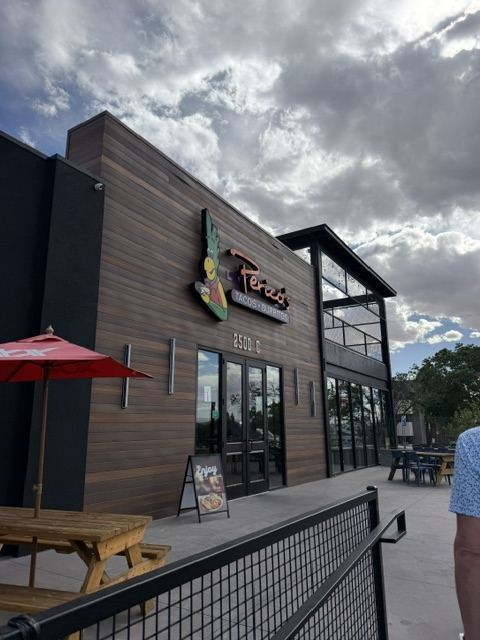
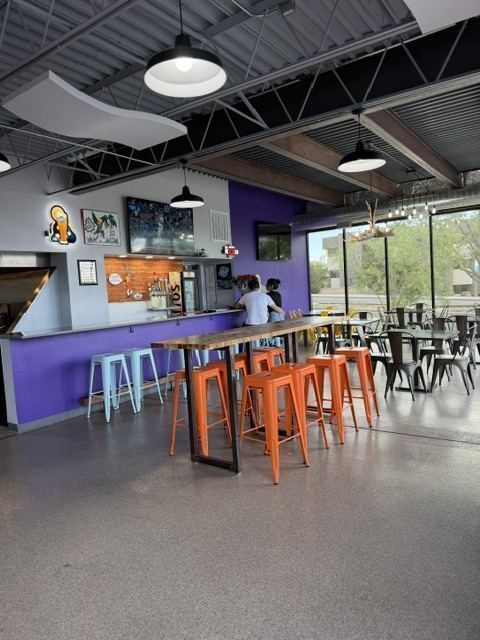
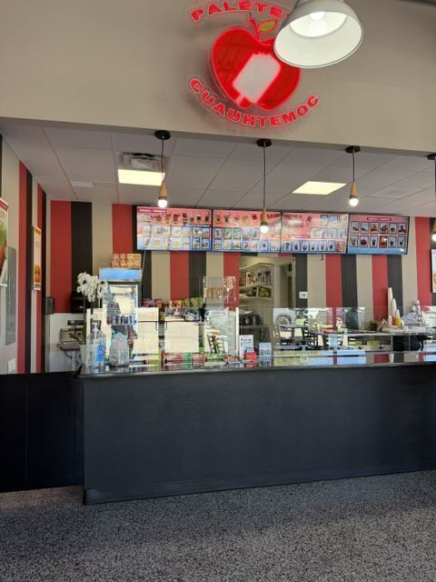
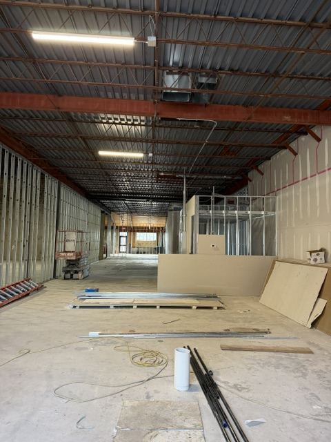

Eat. Drink.
Stay Awhile.
A block of local businesses on Yale Blvd, minutes from the Albuquerque Sunport. Real New Mexican plates, handmade paletas, and New Mexico beer on tap.
- Address
- 2500 Yale Blvd SE
- Near
- ABQ Sunport
- Parking
- Free & On Site
- Open Now
- 3 Local Spots
Who's Here
The Directory
Three Ways to Eat Well on Yale

Mexican + New Mexican
Perico's Tacos & Burritos
Family-owned in Albuquerque since 1982. Half-pound burritos, stuffed sopapillas, tacos by the six-pack, and red or green that actually has heat.
Mon–Fri 9am–8pm · Sat 10am–7pm · Sun closed
Menu + Hours
Paletas · Ice Cream · Aguas Frescas
Paletería Cuauhtémoc
Handmade Mexican paletas, ice cream, aguas frescas and snacks. The right stop when it's 95° and you've still got an hour before boarding.
Mon–Fri 11am–9pm · Sat–Sun 12pm–9pm
Flavors + HoursBrewery · Taproom · Coffee
FMV Brewing Co.
Seven New Mexico beers on tap, cocktails on local spirits, and coffee roasted in house. Veteran-owned, and a far better place to wait out a delay than the gate.
Wed–Sat 12pm–9pm · Sun 12pm–8pm · Mon–Tue closed
Taproom + HoursSalon
The Suite Haus
A salon suite concept is under construction and joining the block soon.
Opening date to be announced
Happening Here

Travelers
The last real meal before your flight.
Yale Blvd is the road into the Sunport. Rental car return is on the way, and so is your hotel.
Near the SunportDrink
A brewery, a coffee bar and a wine list.
FMV pours Wednesday through Sunday — Santa Fe Brewing, La Cumbre, Marble and Canteen on tap, plus coffee roasted in house.
Visit FMV
Leasing
One space left on the block.
Inline retail with its own patio, sitting between two established food businesses.
Lease at YaleThe Block
A Look Around
For Travelers + Crews
Skip the Terminal Food Court
We're the last real meal before your flight and the first one after you land. Park once, eat, and get back on Yale.
Distance
Minutes from the Sunport terminal
Parking
Free surface lot out front
Takeout
Order ahead for pickup or delivery
Patios
Outdoor seating at multiple businesses
Visit
Where We Are
2500 Yale Blvd SE, Albuquerque, NM 87106. On Yale between Gibson and the Sunport, in the block with the dark wood facade and the patio out front.
You're minutes from the airport, the University of New Mexico, UNM Hospital, Kirtland AFB and the Yale Blvd hotel strip — which is a long way of saying most of the south side of the city drives past our door.
Parking
Free surface lot on site
Directions
Hours
Vary by business — see each page
Common Questions
Eating Near the Albuquerque Airport
Where can I get good Mexican food near the Albuquerque airport?
Perico's Tacos & Burritos at 2500 Yale Blvd SE has been family-owned in Albuquerque since 1982 and is a short drive from the Sunport. Burritos, tacos, stuffed sopapillas and New Mexican plates, with takeout and online ordering. See the Perico's page →
Is there a brewery near the ABQ Sunport?
Yes — FMV Brewing Co. is in Suite G at 2500 Yale Blvd SE, with seven New Mexico beers on tap from Santa Fe Brewing, La Cumbre, Marble and Canteen, plus local wine, cider, cocktails and house-roasted coffee. Open Wednesday through Sunday. See the FMV Brewing page →
What's open near the airport in the evening?
Paletería Cuauhtémoc is open until 9pm every day. FMV Brewing pours until 9pm Wednesday through Saturday and 8pm on Sunday. Perico's closes at 8pm on weekdays and 7pm Saturday, and is closed Sunday.
Is there parking?
Yes, free surface parking on site. You can park once and walk to every business in the building.
Leasing
One Space Left on the Block
A single remaining space at 2500 Yale Blvd SE — inline retail sitting directly between two busy, established food businesses, with its own outdoor patio.
- Shell condition — build it to suit your concept
- Private patio for outdoor seating
- Building signage plus the monument sign on Yale Blvd
- Restaurant, café, bar, retail and service uses all considered
- Tenant improvement allowance available for qualified tenants
- Existing neighbors already driving daily foot traffic
About Yale
A Local Block, Not a Chain Strip
Yale is a family-owned property on Yale Blvd SE. We lease to independent operators — the kind of businesses that make a neighborhood worth stopping in. The building has been rebuilt suite by suite over the last few years, and it's now most of the way full.